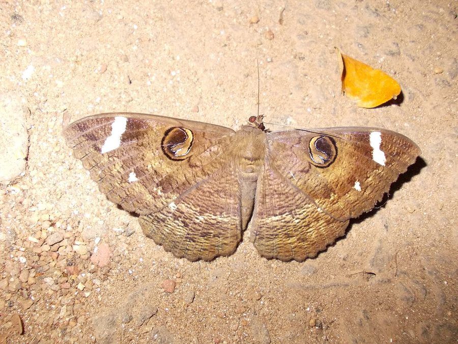

सफेद-पट्टी उल्लू पतंगाWhite-barred Owl Moth
Erebus hieroglyphica · Erebidae · INS-0313

- Scientific name वैज्ञानिक नाम
- Erebus hieroglyphica (Drury, 1773)
- Family कुल
- Erebidae
- Hindi हिंदी
- सफेद-पट्टी उल्लू पतंगा
- Local names स्थानीय नाम
- white-barred owl moth, safed patti ullu patanga
- Status here यहाँ की स्थिति
- native
- Movement आवागमन
- Resident, here all year
- Known from कहाँ दर्ज
- Others have published records from the wider Awadh–Purvanchal plain, none yet from Basti–Ayodhya अवध–पूर्वांचल से दूसरों के प्रकाशित अभिलेख, बस्ती–अयोध्या से अभी नहीं
- IUCN IUCN
- not evaluated
- Review समीक्षा
- not yet reviewed
When to look कब देखें
Present all year. साल भर मौजूद।
सफेद-पट्टी उल्लू पतंगा / White-barred Owl Moth
Erebus hieroglyphica (Drury, 1773) — Erebidae
सफेद-पट्टी उल्लू पतंगा — यह गहरे भूरे-काले रंग का एक बड़ा पतंगा है जिसके अगले पंख पर एक बड़ा घुमावदार आँख जैसा निशान होता है। इसके अगले पंख के ऊपरी किनारे से एक तिरछी पट्टी निकलती है जो नर में पीली और मादा में सफेद होती है। इसके पंखों का फैलाव लगभग 88 मिमी होता है।
Quick Identification त्वरित पहचान
| Feature | Description |
|---|---|
| Wingspan | 88 mm (Hampson 1894, p. 460) |
| Male | Rich black-brown; forewing with a whorl-shaped black mark beyond end of cell, bilobed and expanding at head where it is outlined with blue; an oblique yellow bar from costa near apex (Hampson 1894, p. 459) |
| Female | Brown with black striae; forewing with the oblique bar white; both wings with traces of postmedial band of whitish marks; white spot on forewing above vein 3 (Hampson 1894, p. 459) |
Field tip: Look for a large dark brown moth with a large whorl-shaped mark beyond the forewing cell and an oblique bar near the apex — yellow in the male and white in the female (Hampson 1894, p. 459).
हिंदी: इसके पंखों का फैलाव 88 मिमी होता है। नर में गहरे काले-भूरे पंख पर पीली तिरछी पट्टी होती है, जबकि मादा में यह पट्टी सफेद होती है।
Morphology आकारिकी
Biometrics:
| Measurement | Range | Source |
|---|---|---|
| Expanse | 88 mm | Hampson (1894, p. 460) |
Hampson (1894, p. 459) describes the male and female separately:
- Male: "Rich black-brown, fore wing with a whorl-shaped black mark beyond end of cell, bilobed and expanding at head, where it is outlined with blue ; an oblique yellow bar from costa near apex, in one specimen reaching outer margin."
- Female: "Brown, with black striae ; fore wing with the oblique ... white ; both wings with traces of postmedial band of whitish marks and white spot on fore wing above vein 3."
हिंदी: हैंपसन (1894) के अनुसार नर गहरा काला-भूरा होता है और उसके अगले पंख पर नीली किनारी वाला घुमावदार काला निशान तथा एक पीली तिरछी पट्टी होती है। मादा भूरी होती है और उसमें यह तिरछी पट्टी सफेद होती है।
Behaviour & Ecology व्यवहार और पारिस्थितिकी
Not available in consulted sources.
हिंदी: इसके व्यवहार और पारिस्थितिकी का विस्तृत विवरण देखे गए स्रोतों में उपलब्ध नहीं है।
Life Cycle / Phenology जीवन चक्र
Not available in consulted sources.
हिंदी: इसके जीवन चक्र और मौसमी गतिविधि का विवरण देखे गए स्रोतों में उपलब्ध नहीं है।
Host Plants or Prey आहार
Not available in consulted sources.
हिंदी: इसके भोजन-पौधों का विवरण देखे गए स्रोतों में उपलब्ध नहीं है।
Predators / Natural Enemies शत्रु
Not available in consulted sources.
हिंदी: इसके प्राकृतिक शत्रुओं का विवरण देखे गए स्रोतों में उपलब्ध नहीं है।
Agricultural / Human Relevance कृषि प्रासंगिकता
Not available in consulted sources.
हिंदी: इसके कृषि या मानव महत्व का विवरण देखे गए स्रोतों में उपलब्ध नहीं है।
Expected Locally स्थानीय रूप से अपेक्षित
Not a field record. Written from published accounts for eastern Uttar Pradesh. No confirmed local sighting yet — if you have seen it, that is what the atlas needs.
अभी तक स्थानीय पुष्टि नहीं। यह विवरण प्रकाशित स्रोतों से है, किसी अवलोकन से नहीं।
Hampson (1894, p. 460) gives its range as throughout India. GBIF holds published records from the wider Awadh–Purvanchal plain, none yet from Basti–Ayodhya: two photographed records from Lakhimpur Kheri on 23 July 2026 and 1 August 2026, by two observers. A first local record would be a clear photograph showing the large dark wings, whorl-shaped forewing mark, and oblique yellow or white bar near the apex with place and date, sent through the About page.
हिंदी: हैंपसन (1894) ने इसे पूरे भारत में दर्ज किया है। जीबीआइएफ (GBIF) में लखीमपुर खीरी से दो अभिलेख हैं, पर बस्ती या अयोध्या से अभी कोई अभिलेख नहीं है।
Distribution वितरण
Global range: Hampson (1894, p. 460) gives: "Madagascar ; throughout India, Ceylon, and Burma ; Malacca ; Philippines ; Java ; Ternate."
In India: Throughout India (Hampson 1894, p. 460).
In Uttar Pradesh: GBIF holds two photographed records from Lakhimpur Kheri (23 July 2026 and 1 August 2026, two observers).
In Basti district / eastern UP: GBIF holds no record from Basti or Ayodhya.
हिंदी: हैंपसन (1894) के अनुसार यह मेडागास्कर, पूरे भारत, श्रीलंका, बर्मा, मलक्का, फिलीपींस, जावा और टर्नेट में पाया जाता है। उत्तर प्रदेश में जीबीआइएफ पर लखीमपुर खीरी के दो अभिलेख हैं, पर बस्ती और अयोध्या से कोई अभिलेख नहीं है।
Research Questions शोध प्रश्न
Anyone can investigate these | कोई भी इन प्रश्नों की जाँच कर सकता है
- Does Erebus hieroglyphica occur in Basti and Ayodhya districts, given its records in Lakhimpur Kheri? / क्या बस्ती और अयोध्या जिलों में सफेद-पट्टी उल्लू पतंगा मिलता है?
- In which months are adults active in eastern Uttar Pradesh (given July and August records in Lakhimpur Kheri)? / पूर्वी उत्तर प्रदेश में यह पतंगा किन महीनों में सक्रिय रहता है?
- Which larval food-plants does Erebus hieroglyphica use in eastern Uttar Pradesh?
- How do male (yellow-barred) and female (white-barred) encounters compare in eastern Uttar Pradesh?
- Can a child tell whether a resting owl moth is male or female by checking if the bar near the wingtip is yellow or white? (No equipment needed.)
हिंदी: कोई भी व्यक्ति बिना किसी उपकरण के बैठे हुए पतंगे के पंख की तिरछी पट्टी का रंग (पीला या सफेद) देखकर नर और मादा को पहचान सकता है।
Similar Species मिलती-जुलती प्रजातियाँ
| Species | How to tell apart | हिंदी |
|---|---|---|
| Erebus macrops | Much larger than E. hieroglyphica; fuscous brown with a slight purplish tinge and a very large fulvous ocellus beyond end of cell, lacking the oblique yellow or white subapical bar of E. hieroglyphica (Hampson 1894, p. 459, as Nyctipao macrops) | बहुत बड़ा आकार, पीलापन लिए बड़ा गोल धब्बा और सिरे के पास तिरछी पट्टी नहीं होती |
Field rule: A large dark owl moth (about 88 mm expanse) with a whorl-shaped forewing mark and an oblique subapical bar (yellow in male, white in female) is Erebus hieroglyphica (Hampson 1894, pp. 459–460).
हिंदी: लगभग 88 मिमी फैलाव और अगले पंख के सिरे के पास तिरछी पीली या सफेद पट्टी से सफेद-पट्टी उल्लू पतंगा की पहचान होती है।
Taxonomy & Classification वर्गीकरण
Original description. Drury, D. (1773). Illustrations of Natural History, vol. 2, p. 3, pl. 2, fig. 1, as Noctua hieroglyphica (GBIF; cited in Hampson 1894, p. 459).
Subspecies. Not available in consulted sources.
Family and order placement. Order Lepidoptera, family Erebidae (GBIF); other atlas members of Erebidae include Dot-underwing Fruit-piercing Moth (Eudocima materna) and Tropical Tiger Moth (Asota caricae). Hampson (1894, p. 459, entry 2402) placed it in Noctuidae under Nyctipao.
Phylogenetic notes. Placed in Erebus and Erebidae in modern classifications (GBIF), whereas Hampson (1894, p. 459) treated it as Nyctipao hieroglyphica in Noctuidae.
IUCN status rationale. Not evaluated on the IUCN Red List.
हिंदी: इसका पहला वैज्ञानिक वर्णन ड्रूरी (1773) ने किया था। हैंपसन (1894) ने इसे Nyctipao hieroglyphica के रूप में Noctuidae कुल में रखा था, जबकि आधुनिक वर्गीकरण में यह Erebidae कुल और Erebus वंश में है।
Photo Gallery फोटो गैलरी
No photos yet — add field photos to media/species/white_barred_owl_moth/ and run node scripts/sync_photos.js.
Photos needed आवश्यक फोटो
- [ ] Dorsal view of female showing the white oblique bar (मादा की ऊपरी सतह और सफेद तिरछी पट्टी दिखाता चित्र)
- [ ] Dorsal view of male showing the yellow oblique bar and whorl-shaped mark (नर की पीली तिरछी पट्टी दिखाता चित्र)
References संदर्भ
- Drury, D. (1773). Illustrations of Natural History. Vol. 2, p. 3, pl. 2, fig. 1 (cited in Hampson 1894, p. 459).
- Hampson, G. F. (1894). The Fauna of British India, including Ceylon and Burma. Moths. Vol. 2 (pp. 459–460, as Nyctipao hieroglyphica). Taylor and Francis, London.
- GBIF Occurrence Data — Erebus hieroglyphica (Drury, 1773), India (2025).
Source file: species/fauna/insects/white_barred_owl_moth.md